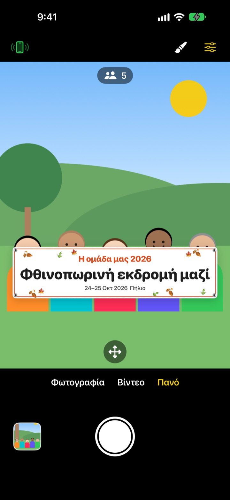
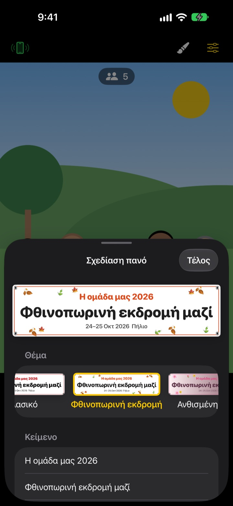

Η ομαδική με το πανό,
χωρίς να τυπώσετε πανό
Γράψτε το κείμενο, διαλέξτε θέμα και το πανό εμφανίζεται ακριβώς μπροστά στην παρέα. Το iPhone ενός φίλου γίνεται τηλεχειριστήριο με ένα σκανάρισμα QR, έτσι μπαίνει στη φωτογραφία και όποιος τραβάει.
Όλες οι λειτουργίες είναι δωρεάν. Απαιτεί iOS 17 ή νεότερο.

Φτιάξτε ένα πανό
Αλλάξτε το κείμενο και πατήστε ένα θέμα. Με το κλείστρο ξεκινά αντίστροφη μέτρηση 3 δευτερολέπτων, όπως στην εφαρμογή.
Παραγγέλνετε πανό για μία μόνο φωτογραφία;
Το παραγγέλνετε για τη φωτογραφία της εκδρομής, το κουβαλάτε εκείνη τη μέρα και μετά δεν ξέρετε πού να το βάλετε. Κι αφού δεν υπάρχει κανείς να τραβήξει, κάποιος μένει πάντα εκτός κάδρου. Το ShutterLink βάζει το πανό μέσα στο κάδρο και κάνει το iPhone ενός φίλου τηλεχειριστήριο, ώστε να χωρέσουν όλοι στη φωτογραφία με το πανό.
Πανό για τη δική σας περίσταση σε ένα λεπτό
Διαλέξτε ανάμεσα σε 13 θέματα, όπως φθινοπωρινή εκδρομή, ανθισμένη άνοιξη, πρωτοχρονιάτικο πάρτι, γενέθλια, αθλητική ημέρα, αποφοίτηση, γάμος και εταιρικό εργαστήριο, και γράψτε έως τρεις γραμμές δικού σας κειμένου.
Αλλάξτε φόντο, γραμματοσειρά, διακοσμητικά, χρώματα και αναλογίες, και προσθέστε το λογότυπό σας. Υλικό: ύφασμα, βινύλιο ή χαρτί. Το υφασμάτινο πανό κρεμάει, τσαλακώνει και κυματίζει στον αέρα σαν αληθινό.

Τηλεχειριστήριο χωρίς εγκατάσταση, με ένα QR
Πατήστε το κουμπί τηλεχειριστηρίου πάνω αριστερά και εμφανίζεται ένας κωδικός QR. Ο φίλος σας τον σκανάρει με την κανονική Κάμερα και το ShutterLink Remote ανοίγει αμέσως ως App Clip και συνδέεται.
Στη ζωντανή προβολή του τηλεχειριστηρίου φαίνεται και το πανό, οπότε στήνετε το κάδρο και πατάτε το κλείστρο. Κάθε φωτογραφία φτάνει αμέσως στο iPhone-τηλεχειριστήριο, ώστε ένας φίλος χωρίς την εφαρμογή να την αποθηκεύσει και να τη μοιραστεί επί τόπου.
Τρία βήματα για να ξεκινήσετε
- 1
Στήστε το iPhone
Ανοίξτε το ShutterLink και βάλτε το κινητό σε τρίποδο ή ράφι.
- 2
Τοποθετήστε το πανό
Επιλέξτε Πανό κάτω, ορίστε κείμενο και θέμα με το κουμπί του πινέλου και πατήστε στο έδαφος όπου θα σταθεί η παρέα.
- 3
Σηκώστε την παλάμη
Σηκώστε την παλάμη ή πατήστε το κλείστρο στο τηλεχειριστήριο. Το χρονόμετρο μετράει και τραβάει.
Φτιαγμένο για ομαδικές φωτογραφίες
- Χειρονομία παλάμης · κλείστρο με χειροκρότημα
- Σηκώστε ανοιχτή παλάμη προς την κάμερα ή χτυπήστε μία φορά δυνατά παλαμάκια και ξεκινά το χρονόμετρο
- Κλείστρο με χαμόγελο
- Τραβάει μόνο του όταν όλοι χαμογελούν με ανοιχτά μάτια
- Χρονόμετρο 3 · 5 · 10 · 20 · 30 δευτ.
- Μια φωνή μετράει αντίστροφα, το φλας αναβοσβήνει μαζί και το τηλεχειριστήριο δονείται στο χέρι σας
- Ζητήστε από όλους να κοιτάξουν την κάμερα
- Πατήστε το και το iPhone-κάμερα φωνάζει για να κοιτάξουν όλοι τον φακό
- Ριπή 3 · 5 λήψεων
- Κρατά την καλύτερη λήψη όπου όλοι έχουν ανοιχτά μάτια. Μπορείτε να την αλλάξετε στη συλλογή
- Πλήθος ατόμων · άκρες · αλφάδι
- Μετράει τα άτομα στο κάδρο, προειδοποιεί όταν κάποιος είναι στην άκρη και δείχνει αλφάδι όταν το κινητό γέρνει
- Διαδοχικές λήψεις από 3 δευτ. έως 1 λεπτό
- Καταγράψτε ένα ηλιοβασίλεμα ή την πρόοδο μιας δουλειάς σε σταθερά διαστήματα
- Έλεγχος κάμερας
- Εστίαση και έκθεση με άγγιγμα, αντιστάθμιση έκθεσης, φλας, πλέγμα, ζουμ από 0,5x έως 10x ανάλογα με το μοντέλο, μπροστινή και πίσω κάμερα, βίντεο
- Απλή λειτουργία
- Το τηλεχειριστήριο δείχνει μόνο ένα μεγάλο κουμπί κλείστρου που μπορεί να πατήσει ο καθένας
- Κουμπιά έντασης · Camera Control
- Τραβήξτε απευθείας από το iPhone-κάμερα, χωρίς τηλεχειριστήριο
Στη λειτουργία Πανό δεν είναι διαθέσιμα το φλας, οι ριπές, το ζουμ και η μπροστινή κάμερα. Το χρονόμετρο, το κλείστρο με την παλάμη και το τηλεχειριστήριο λειτουργούν κανονικά.
Όλες οι λειτουργίες είναι δωρεάν
Δωρεάν
- Λειτουργία Πανό με 13 θέματα
- Τηλεχειριστήριο χωρίς εγκατάσταση (App Clip)
- Κλείστρο με παλάμη, χειροκρότημα και χαμόγελο, χρονόμετρο
- Καλύτερη λήψη, μέτρηση ατόμων, αλφάδι
- Βίντεο και διαδοχικές λήψεις
Φιλοδώρημα (προαιρετικό)
- Στείλτε μικρό, μεσαίο ή μεγάλο φιλοδώρημα από τις Ρυθμίσεις
- Το φιλοδώρημα δεν ξεκλειδώνει ούτε κλειδώνει τίποτα
Δεν είναι συνδρομή. Πληρώνετε μία φορά, μόνο όταν στέλνετε φιλοδώρημα.
Χωρίς διαφημίσεις και χωρίς λογαριασμό.
Συχνές ερωτήσεις
Τι χρειάζομαι;
Εγκαταστήστε το ShutterLink στο iPhone που θα τραβάει (iOS 17 ή νεότερο). Στο iPhone-τηλεχειριστήριο δεν χρειάζεται εγκατάσταση, μόνο σύνδεση στο ίντερνετ την πρώτη φορά που ανοίγει το App Clip. Κρατήστε το Bluetooth ανοιχτό και στα δύο και τα κινητά κοντά, συνήθως σε απόσταση έως 10 μ.
Σκανάρω το QR αλλά το App Clip δεν ανοίγει.
Ελέγξτε ότι το iPhone-τηλεχειριστήριο είναι συνδεδεμένο στο ίντερνετ. Μπορείτε επίσης να πληκτρολογήσετε στο ShutterLink Remote τον τετραψήφιο κωδικό του iPhone-κάμερας και να πατήσετε Σύνδεση. Ελέγξτε και ότι τα App Clip δεν είναι αποκλεισμένα στις Ρυθμίσεις › Χρόνος επί οθόνης › Περιορισμοί περιεχομένου και απορρήτου.
Κολλάει στο «Αναζήτηση κάμερας…».
Το ShutterLink πρέπει να είναι ανοιχτό στην οθόνη του iPhone-κάμερας. Ελέγξτε ότι το Bluetooth είναι ενεργό στις Ρυθμίσεις › Bluetooth και στα δύο κινητά. Ο κωδικός αλλάζει κάθε φορά που ανοίγει η εφαρμογή, οπότε αν την ξανανοίξατε, χρησιμοποιήστε το νέο QR ή κωδικό και πατήστε Δοκιμάστε ξανά.
Βλέπω «Η άδεια Bluetooth απορρίφθηκε».
Ενεργοποιήστε το ShutterLink στις Ρυθμίσεις › Απόρρητο και ασφάλεια › Bluetooth. Το τηλεχειριστήριο είναι App Clip και ίσως δεν εμφανίζεται στη λίστα. Τότε σκανάρετε ξανά το QR και πατήστε Να επιτρέπεται όταν σας ζητηθεί.
Η ζωντανή προβολή κολλάει ή είναι θολή.
Η ζωντανή προβολή είναι σκόπιμα μικρή για να περνά μέσω Bluetooth. Οι φωτογραφίες και τα βίντεο αποθηκεύονται στην πλήρη ποιότητα του iPhone-κάμερας. Τοίχοι, άνθρωποι ή μεγάλη απόσταση μπορεί να προκαλέσουν διακοπές, αλλά το κλείστρο και τα υπόλοιπα χειριστήρια συνεχίζουν να λειτουργούν.
Πού πάνε οι φωτογραφίες μου;
Στις Φωτογραφίες του iPhone-κάμερας και στη συλλογή της εφαρμογής. Και το τηλεχειριστήριο παίρνει ένα αντίγραφο, αλλά δεν το αποθηκεύει μόνο του, οπότε αποθηκεύστε το ή μοιραστείτε το πριν το κλείσετε. Αν δεν φτάνει τίποτα στις Φωτογραφίες, επιτρέψτε το ShutterLink στις Ρυθμίσεις › Απόρρητο και ασφάλεια › Φωτογραφίες.
Τα βίντεο δεν έχουν ήχο.
Ενεργοποιήστε το ShutterLink στις Ρυθμίσεις › Απόρρητο και ασφάλεια › Μικρόφωνο.
Μπορώ να συνδέσω πολλά τηλεχειριστήρια;
Ναι. Πολλά iPhone μπορούν να συνδεθούν ταυτόχρονα με το ίδιο QR ή τον ίδιο κωδικό, και από όποιο κι αν πατήσετε, τραβάει η ίδια κάμερα.
Η σύνδεση κόβεται την ώρα που τραβάω.
Όσο το ShutterLink είναι ανοιχτό, η οθόνη δεν σβήνει μόνη της. Αν κλειδώσετε το κινητό με το πλαϊνό κουμπί ή πάτε σε άλλη εφαρμογή, η σύνδεση κόβεται, γι' αυτό κρατήστε την εφαρμογή στην οθόνη όσο τραβάτε.
Ανεβαίνουν κάπου οι φωτογραφίες μου;
Όχι. Τα δύο iPhone συνδέονται απευθείας μέσω Bluetooth και οι φωτογραφίες και τα βίντεο μένουν μόνο στο iPhone-κάμερα και στο τηλεχειριστήριο που συνδέσατε. Λειτουργεί και στο βουνό ή στην παραλία χωρίς σήμα, χωρίς λογαριασμό.
Δεν λύθηκε ή βρήκατε σφάλμα; Γράψτε στο leeo@kakao.com. Αναφέρετε τα μοντέλα και τις εκδόσεις iOS και των δύο iPhone για να το εξετάσουμε πιο γρήγορα.